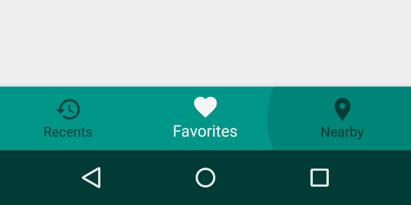
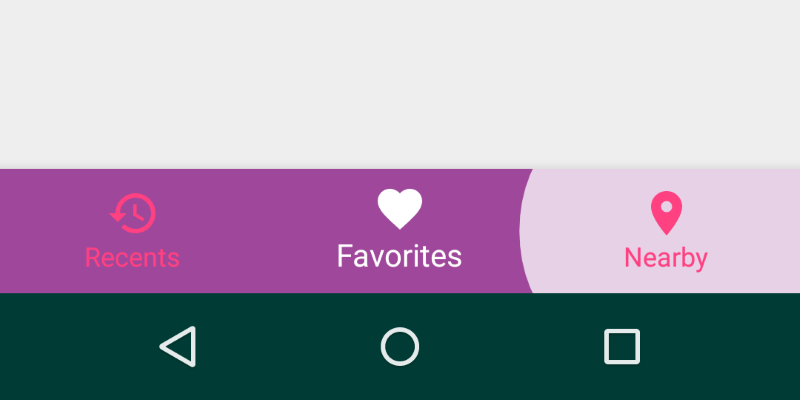

Bottom navigation¶

From google material design documentation.
Bottom navigation bars make it easy to explore and switch between top-level views in a single tap.
How to add?¶
I. In your build.gradle add latest design and appcompat libraries.
dependencies {
compile 'com.android.support:appcompat-v7:X.X.X'
compile 'com.android.support:design:X.X.X'
// where X.X.X version
}
II. Make your activity extend android.support.v7.app.AppCompatActivity.
public class MainActivity extends AppCompatActivity { ... }
III. Declare navigation items in menu file.
<menu xmlns:android="http://schemas.android.com/apk/res/android"> <item android:id="@+id/recents" android:title="Recents" android:icon="@drawable/ic_history_24dp"/> <item android:id="@+id/favorites" android:title="Favorites" android:icon="@drawable/ic_favorite_24dp"/> <item android:id="@+id/nearby" android:title="Nearby" android:icon="@drawable/ic_place_24dp"/> </menu>
IV. Declare BottomNavigationView inside your layout.xml file.
<android.support.design.widget.BottomNavigationView android:id="@+id/bottomNavigationView" android:layout_width="match_parent" android:layout_height="wrap_content" app:menu="@menu/bottom_navigation_menu"/>
How to style?¶

I. Define custom color for navigation bar.
<selector xmlns:android="http://schemas.android.com/apk/res/android"> <item android:state_checked="false" android:color="@color/pink"/> <item android:color="@android:color/white"/> </selector>
II. Define custom backgrounds for navigation bar items.
// res/drawable, to support devices lower then 21 API <selector xmlns:android="http://schemas.android.com/apk/res/android"> <item android:state_pressed="true" android:drawable="@android:color/white"/> <item android:drawable="@android:color/transparent"/> </selector> // res/drawable-v21 folder, for devices greater or equal then 21 API <ripple xmlns:android="http://schemas.android.com/apk/res/android" android:color="@android:color/white"> </ripple>
III. Declare custom style in your styles.xml file.
<style name="BottomNavigation"> <item name="android:background">@color/indigo</item> <item name="itemBackground">@drawable/navigation_bar_item_bg</item> <item name="itemIconTint">@color/navigation_bar_txt_color</item> <item name="itemTextColor">@color/navigation_bar_txt_color</item> <item name="paddingStart">@dimen/bottom_navigation_padding</item> <item name="paddingEnd">@dimen/bottom_navigation_padding</item> </style>
IV. Apply this style to your BottomNavigationView via style attribute.
<android.support.design.widget.BottomNavigationView android:id="@+id/bottomNavigationView" android:layout_width="match_parent" android:layout_height="wrap_content" app:menu="@menu/bottom_navigation_menu" style="@style/BottomNavigation"/>
Handle item selection¶
BottomNavigationView bottomNavigationView; // ... bottomNavigationView.setOnNavigationItemSelectedListener(new OnNavigationItemSelectedListener() { @Override public boolean onNavigationItemSelected(@NonNull MenuItem item) { if (item.getItemId() == R.id.favorites) { // on favorites clicked return true; } return false; } });
Select item programmatically¶
BottomNavigationView navigationView; // ... navigationView= (BottomNavigationView) findViewById(R.id.bottomNavigationView); navigationView.getMenu().getItem(itemToSelect).setChecked(true);
Get selected item¶
There is no API to get selected item. Instead you can :
I. Get menu from BottomNavigationView and search for
checked item.
BottomNavigationView bottomNavigationView; // ... int getSelectedItem() { Menu menu = bottomNavigationView.getMenu(); for (int i = 0; i < menu.size(); i++) { if (menu.getItem(i).isChecked()) { return i; } } return 0; }
II. Add global selectedItem variable and update it each time you do select item programmatically and each time you receive OnNavigationItemSelected event.